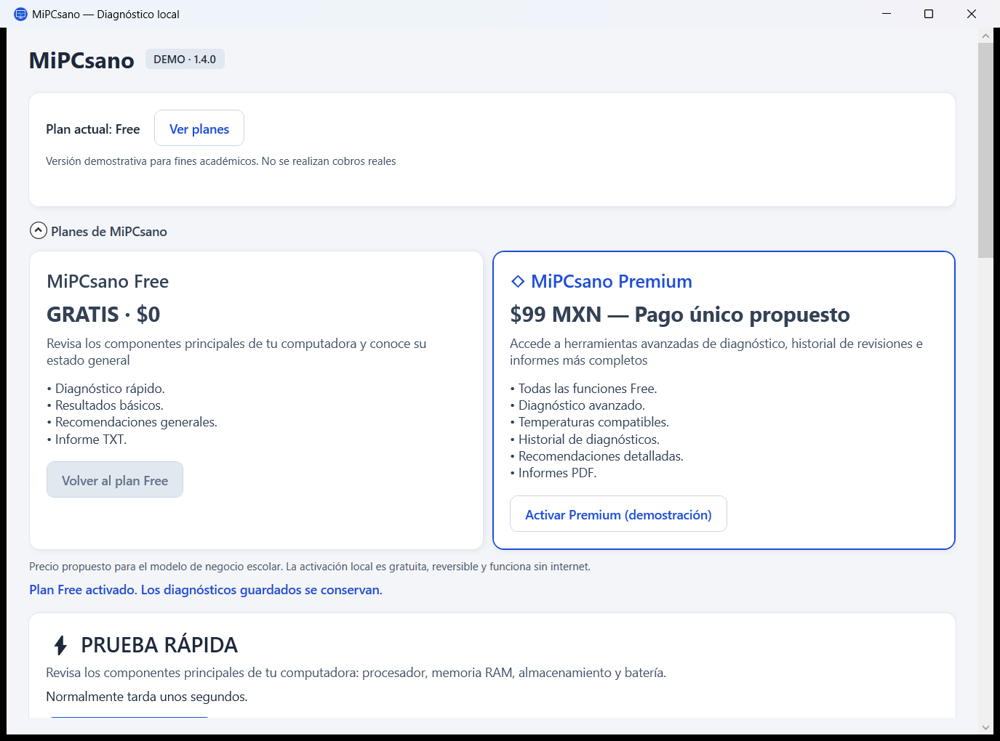
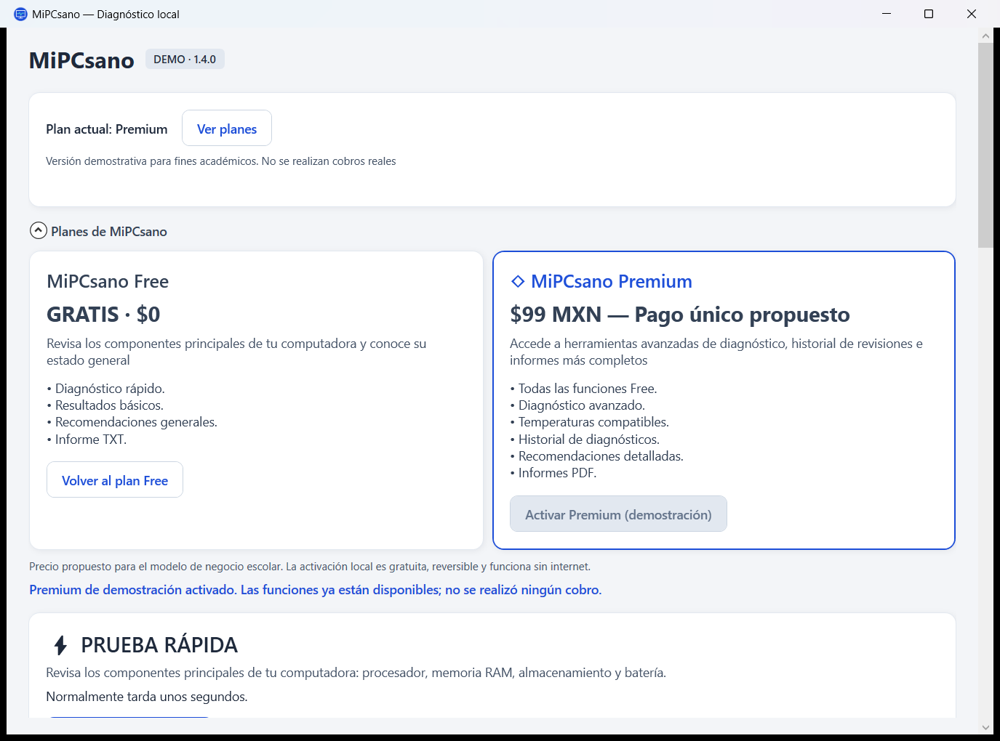

Memoria RAM
Capacidad utilizable, memoria disponible y uso actual. Consulta el inventario y la última prueba de memoria registrada en Windows, cuando están disponibles.
El uso normal no confirma la integridad física de la RAM.
Versión 1.4.0 · DEMOUna primera orientación
MiPCsano es una aplicación para Windows que permite revisar el estado de los principales componentes de una computadora, realizar diagnósticos avanzados y comprender los resultados mediante explicaciones sencillas.
Solo para Windows de 64 bits (x64)
Instalador 1.4.0 disponible en GitHub Releases. Lee los requisitos antes de instalar.
Aplicación e instalador sin firma de código reconocida. Windows puede mostrar «Editor desconocido» o restringir la ejecución; esta página no elimina esos avisos.
No está disponible para macOS, Linux, Android ni iPhone.
Windows 11 x64: 24H2, 25H2 y 26H1; 23H2 únicamente en Enterprise/Education, mientras mantenga soporte.
Windows 10 x64: solo las ediciones LTSC/Enterprise compatibles con .NET 10 (21H2, 1809 y 1607), según su ciclo de soporte. No se anuncia compatibilidad general con Windows 10 Home/Pro.
Estas versiones corresponden a la plataforma .NET 10. MiPCsano se ha probado en Windows 11 25H2 x64; las demás versiones y ediciones requieren validación de MiPCsano 1.4.0.
Necesita PowerShell de Windows y los proveedores de información del sistema disponibles. Algunas lecturas dependen del firmware, los controladores y los permisos. El instalador incluye .NET 10.0.13. No necesitas instalar .NET ni el SDK por separado. La instalación es por usuario; el diagnóstico avanzado puede solicitar UAC de forma independiente.
Consultar las versiones admitidas por MicrosoftCompatibilidad de la plataforma consultada el 13 de octubre de 2026.
Cuatro componentes
Una mirada a lo que el equipo informa. Los datos ausentes se muestran como tales.
Capacidad utilizable, memoria disponible y uso actual. Consulta el inventario y la última prueba de memoria registrada en Windows, cuando están disponibles.
El uso normal no confirma la integridad física de la RAM.
Carga puntual, núcleos y frecuencias reportadas por Windows o el firmware.
Las frecuencias no son una medición de la velocidad máxima real. Premium muestra temperaturas de CPU/GPU solo cuando hay sensores compatibles; si faltan, indica «Temperatura no disponible en este equipo». No ejecuta pruebas de estrés.
Espacio libre y los indicadores de salud, desgaste o errores que el dispositivo permita consultar.
Un indicador normal no equivale a una prueba completa del disco ni descarta fallas futuras.
Carga restante y capacidades reportadas. Estima desgaste solo cuando los datos se pueden comparar.
No comprueba el cargador. Si tu computadora no tiene batería, su ausencia no se considera una falla.
De la revisión al informe
Free revisa RAM, CPU, almacenamiento y batería. Conserva los cuatro estados, explica los indicadores y permite guardar un TXT básico.
Premium utiliza PLA para recuperar advertencias de rendimiento de Windows. Puede requerir permisos de administrador y no confirma por sí solo una falla física.
Premium permite consultar diagnósticos anteriores sin internet. Las temperaturas dependen del equipo y sus sensores; activar el plan no garantiza que estén disponibles.
Free ofrece TXT básico. Premium añade recomendaciones ampliadas, informes detallados y PDF mediante Microsoft Print to PDF.
Modelo de negocio escolar
Comienza con Free y prueba las funciones existentes de Premium desde la propia aplicación.
Gratis $0
◇ Demostración Premium
$99 MXN Pago único propuesto
Proyecto académico. El precio Premium es una propuesta de negocio. No se realizan cobros reales.
En «Planes de MiPCsano», pulsa «Activar Premium (demostración)». Puedes volver a Free cuando quieras. El estado se conserva localmente al cerrar la aplicación; no se requieren cuentas, datos bancarios ni conexión a internet.
De la consulta a la orientación
Abre MiPCsano-Setup-1.4.0.exe y sigue el asistente. Puedes elegir un acceso directo en el escritorio; también encontrarás la aplicación en Inicio.
Pulsa “Iniciar prueba rápida”. La aplicación muestra qué componente está consultando mientras completa la revisión.
Lee el resumen y las tarjetas. Abre “Explicación y siguientes pasos” o los detalles, y guarda un informe si quieres conservarlo.
Color, icono y texto
Un estado resume los indicadores consultados. No es una certificación de que todo esté sano.
No se observaron alertas en los indicadores disponibles. Esto no descarta todas las fallas.
Hay un indicador, un síntoma o información incompleta que necesita más contexto.
Existe una advertencia o evidencia que conviene revisar. No identifica por sí sola la causa.
La consulta se intentó, pero no hay información suficiente para llegar a una conclusión.
Sin analizar: todavía no se ha consultado ese componente. Es distinto de “no determinado”.
Así se ve
Capturas reales de MiPCsano 1.4.0 instalado, antes de ejecutar un diagnóstico. No muestran resultados ficticios de hardware.


Un proyecto académico
MiPCsano está pensado para personas que no están familiarizadas con los aspectos técnicos de su computadora y necesitan una primera orientación sobre su estado.
Sus resultados se basan en los datos disponibles del equipo. No detecta todas las fallas ni sustituye las pruebas específicas o la revisión de un técnico.
MiPCsano 1.4.0 no garantiza detectar todas las fallas y no realiza reparaciones automáticas. Sus temperaturas y otros indicadores dependen del hardware, firmware, controladores y permisos disponibles.